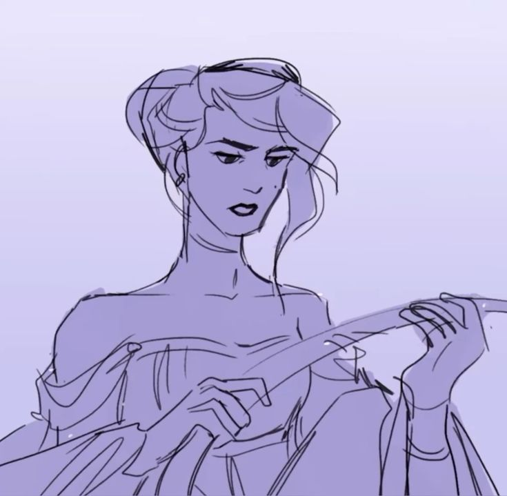
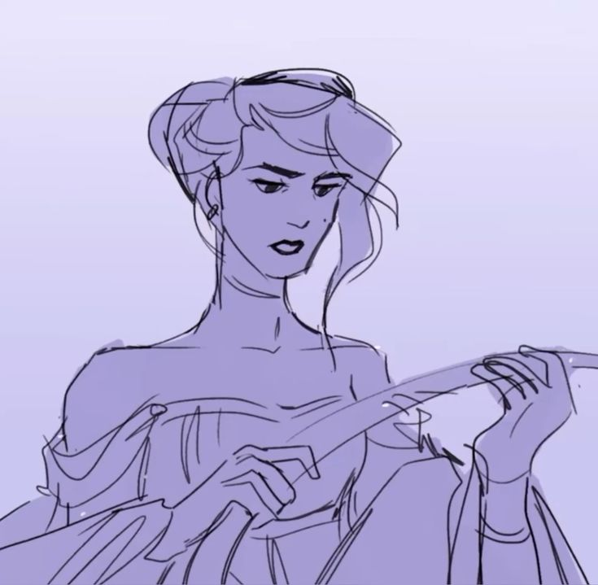

Community

A lo largo de los años, EPIC ha cultivado un gran grupo de miembros del elenco y la comunidad que lo apoyan en diversas plataformas de redes sociales, como TikTok, Discord, YouTube, Instagram y más. Entre los miembros notables del equipo de Epic se encuentran el mezclador de sonido JP Warner, así como destacados miembros del elenco de todo el mundo, muchos de los cuales audicionaron a través de TikTok, como Teagan Earley (Athena), Steven Dookie (Polites), Luke Holt (Zeus), Armando Julián ( urylochus), y más. Jorge destaca a otros miembros importantes del equipo en su TikTok en varios clips y en un segmento llamado "APPRECIATION NATION", donde habla sobre las muchas personas que trabajan arduamente entre bastidores para hacer realidad EPIC.
Main cast of EPIC: The Musical


Jorge Rivera-Herrans as Odysseus
Odiseo es el protagonista y el personaje que guía la narrativa de Epic: El Musical. Jorge Rivera-Herrans, quien también es el creador del musical, interpreta a Odiseo con una voz cargada de intensidad emocional y versatilidad. Su estilo vocal varía a lo largo de la obra: en canciones como “The Horse and the Infant” se muestra seguro, con un tono enérgico y desafiante, mientras que en “No Longer You” y “Scylla”, su voz se torna vulnerable, angustiada o incluso al borde del quiebre. Esto refleja el viaje interior de Odiseo, quien no solo atraviesa peligros físicos, sino también conflictos emocionales profundos. Rivera-Herrans adapta su voz según el estado mental del personaje, haciendo que cada etapa del viaje tenga su propio color sonoro.
En contraste, cuando Rivera-Herrans interpreta personajes secundarios como Polifemo o los Winions, adopta un registro exagerado y cómico, usando efectos de voz y modulaciones que añaden humor y alivio cómico al musical. Esta capacidad de alternar estilos vocales muestra su habilidad técnica y ayuda a diferenciar múltiples personajes dentro de la misma obra.
★


Teagan Earley (TE/MO) as Athena
Teagan Earley (TE/MO) interpreta a Atenea, su estilo es etéreo y melodioso, con líneas vocales fluidas y una delicadeza que transmite sabiduría y guía divina. En canciones como “Warrior of the Mind”, demuestra un dominio absoluto del ritmo y la dicción, lo que refleja la naturaleza lógica, estratégica y sabia de la diosa. Su interpretación suena siempre compuesta y en control, justo como su personaje, que guía a Odiseo sin dejarse llevar por emociones humanas. Su estilo vocal, más técnico que emocional, distingue a Atenea de los mortales y refuerza su rol como figura superior y cerebral.
En contraste, al interpretar a una Winion, su voz se vuelve más aguda, juguetona y energética, con un estilo casi caricaturesco que añade humor y ligereza a la historia. Esta dualidad demuestra cómo el mismo actor puede usar el color y la modulación de la voz para diferenciar claramente personajes dentro de la misma obra.
★★
Steven Rodríguez as Poseidon
Steven Rodríguez interpreta a Poseidón, quien se caracteriza por ser un dios vengativo y poderoso con una voz imponente, grave y autoritaria que transmite poder y amenaza desde el primer verso. En “Ruthlessness”, su entonación pesada y firme no cambia: es constante como el juicio que impone. Su estilo vocal representa el castigo divino inevitable, una fuerza natural implacable. A diferencia de otros personajes que evolucionan emocionalmente, la voz de Poseidón es estática y dominante, reforzando que él no perdona, no olvida y no cambia. Su voz actúa como una sentencia sonora, aterradora en su consistencia.
El uso de notas largas, controladas y con fuerza dramática crea un efecto intimidante que se siente tanto en la música como en la narrativa. Además, la intensidad vocal y la elección de registros graves contribuyen a dar una sensación de monumentalidad al personaje, reforzando su papel como antagonista formidable.
★★★
 

Anna Lea (Casey) as Penelope
Penélope es el contrapunto emocional de Odiseo, y su interpretación vocal está diseñada para transmitir paciencia, ternura y determinación. Anna Lea emplea un estilo melódico y profundamente expresivo, con un control delicado de la respiración que le permite mantener notas largas y sostenidas, creando momentos de gran carga emocional, especialmente en canciones que reflejan su espera y esperanza frente a la ausencia de Odiseo. Canciones como The Challenge muestran su capacidad para equilibrar fuerza vocal con sensibilidad teatral, reforzando la conexión emocional con la audiencia.
Su interpretación la presenta como una figura activa y estratégica, no como una mujer que espera en silencio. En cambio, al interpretar a las sirenas, su timbre cambia a uno más etéreo y seductor, mostrando su capacidad para transformar la intención de su canto dependiendo del personaje. Así, su voz se convierte en un puente entre la razón y el deseo.
★★★★

Miguel Veloso as Telemachus
Miguel Veloso (MICO) da vida a Telémaco representa la juventud y el crecimiento con un estilo vocal fresco, juvenil y emocionalmente sincero. Al principio de la historia, su voz es más ligera y energética, mostrando ingenuidad e inexperiencia. A medida que progresa la narrativa, el estilo vocal de Miguel Veloso se vuelve más firme y seguro, transmitiendo madurez y determinación, lo que refleja la evolución del personaje desde un joven inexperto hasta un líder en desarrollo.
En “Legendary”, su interpretación comienza con un tono inseguro y reflexivo, y evoluciona hacia uno más decidido y firme, lo que refleja el crecimiento del personaje. Su voz acompaña el paso de la infancia a la adultez, del anonimato a la búsqueda de gloria. A medida que avanza la obra, se percibe cómo gana confianza, tanto en su voz como en su identidad, lo cual refuerza su arco narrativo como heredero de Odiseo.